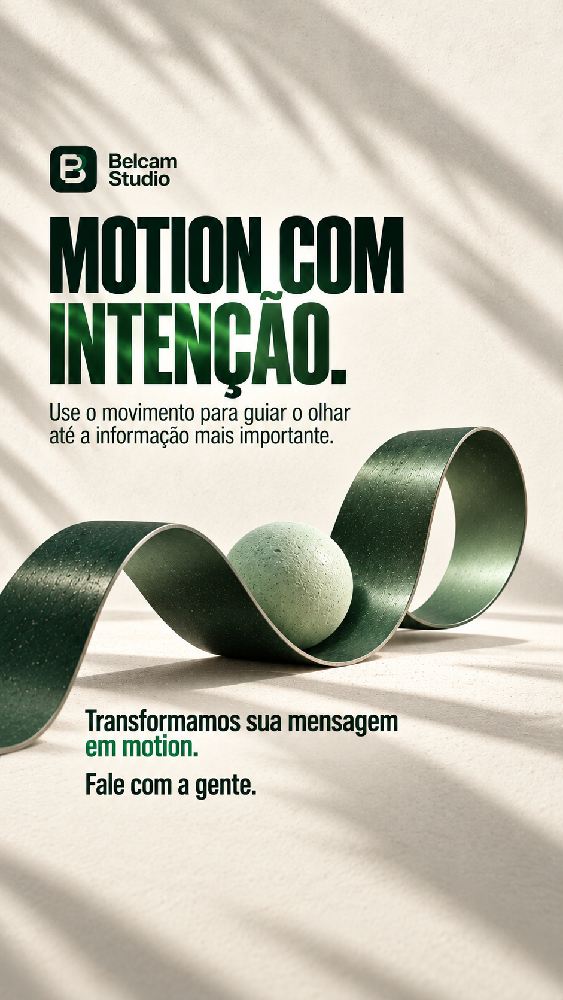
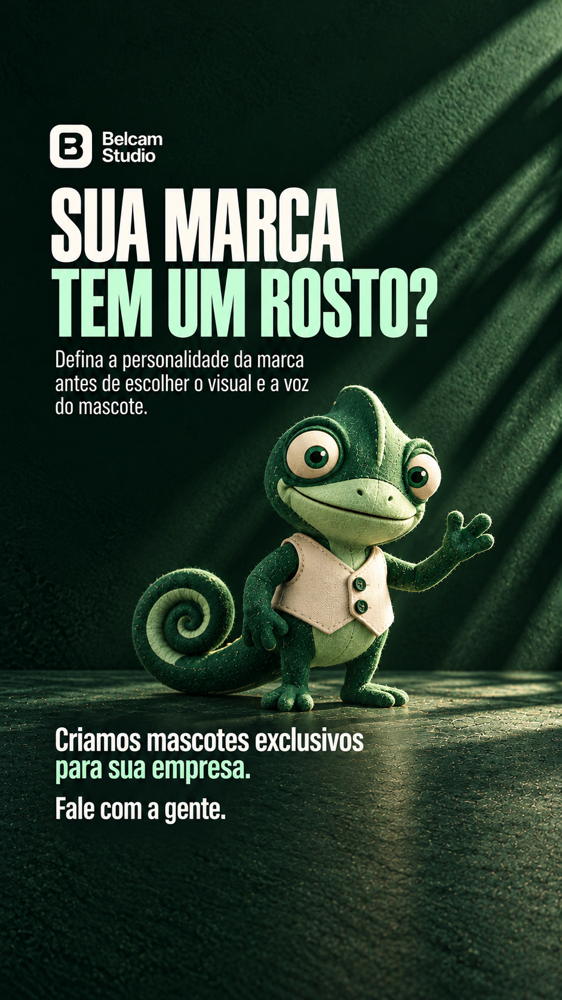
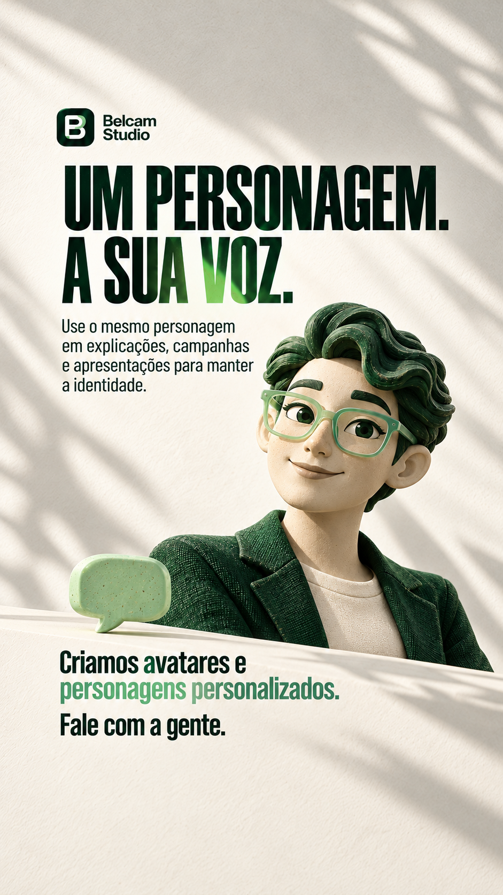
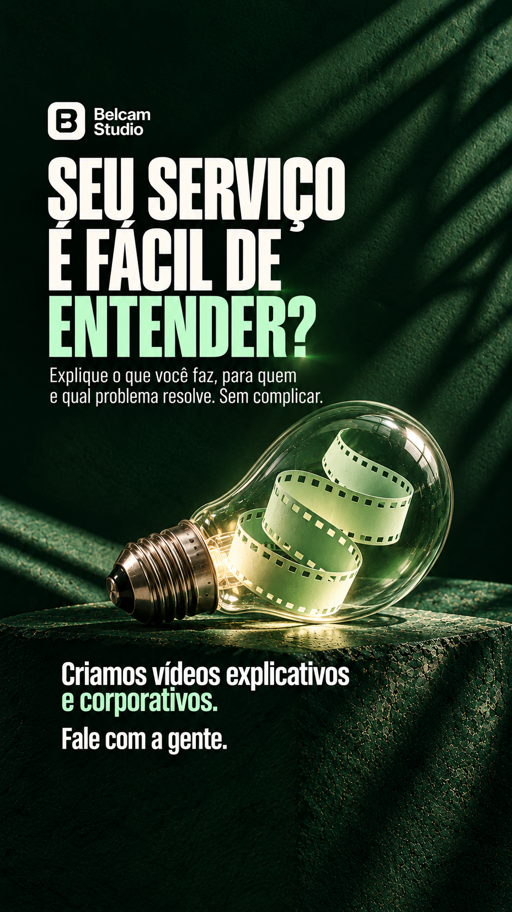
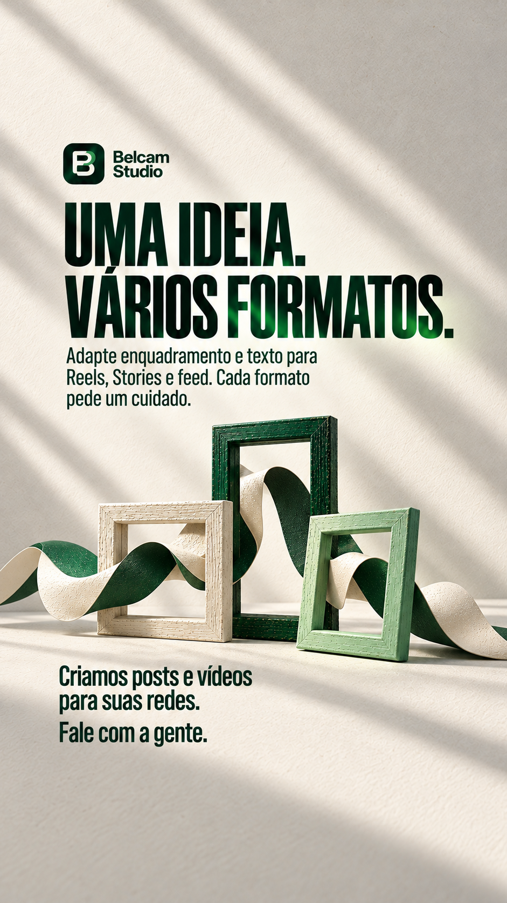

01 · Vídeos personalizados
UMA IDEIA. UM BOM VÍDEO.
Baixar Story
Enquete para um Story complementar
Sua marca já usa vídeos?
Já uso / Quero começar
Seis Stories sobre vídeos personalizados, motion, mascotes, avatares, vídeos explicativos e criação para redes sociais.
Sua marca já usa vídeos?
Já uso / Quero começar

Sua marca já tem motion?
Já tem / Quero experimentar

Sua marca teria um mascote?
Com certeza / Quero conhecer

Onde usaria um personagem?
Nas redes / Em apresentações

Seu serviço precisa de explicação?
Sim, bastante / Uma demonstração ajuda

Qual formato você mais usa?
Reels e Stories / Posts no feed